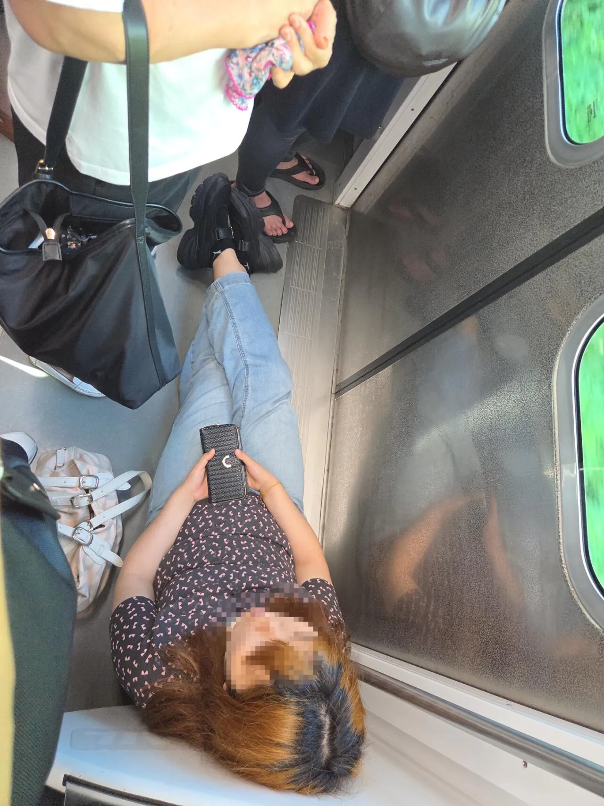
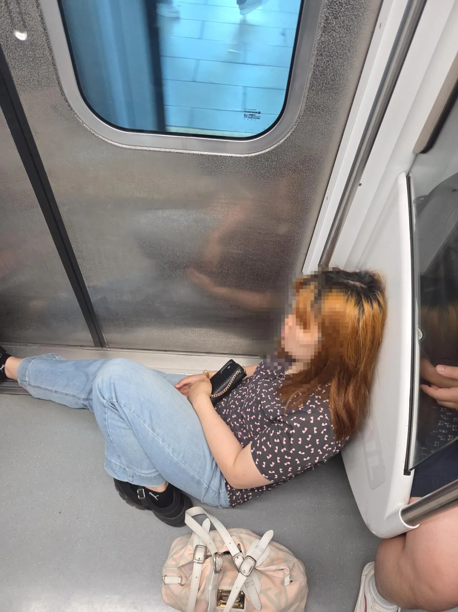

정신이 많이 아픈
어렸을땐 이런거보면 어휴 병신ㅉㅉ이랬는데
요즘에는 직장에서 멘탈 다털렸나 라던가
인생이 존나 힘든가
이생각밖에안드네..ㅋㅋㅋ
요새 지하철 땅바닥에 그냥 앉는 사람은 자주 봤는데 출입문앞에서 저ㅈㄹ하는건 처음보네
한시간 반 출근하니까 요샌 저렇게라도 앉아버리고 싶더라 ㅋㅋ
모자이크를 뚫고 나오네

내릴때 살짣 밟아도돼???
최근에 1호선에서 출근길에 누가 저지랄로 앉아있길래 뭐지 미친사람인가 했는데 가까이 가니까 술냄새가... 이건 어제 먹은게 아니라 방금까지 먹다가 그대로 출근하다 쓰러진거구나 싶더라.. 사람들 다 피해가는데 정신도 못차림...
취했나
몸이 많이 힘들거나 머리가 힘든사람이라 생각하는게 편하긴해
그냥 븅신이라 생각하면 편합니다.
싸커킥 한대만
그냥 살다가 저런날도 있는거지 빌런이라고 해야하나
개드립 올릴 생각에 싱글벙글^^
혹시 너 저렇게해?
살다가 저지경이 될때까지 인사불성이 된다고?? 대체 어떤 삶을 사는거냐
보통 살다가 저기서 저러고있진않아
백주대낮에 저러고 있는게... 정상은 아니잖아
전세사기라도 당했나보지
빌런맞지 출입구쪽에 털썩 쓰러지는 사람도 봤고 바닥에 앉아서 가는 사람도 봤는데
출입구 다리 쭉펴서 가로질러 막고 있는 년은 난생 첨 봄
애기들 키우고 나이먹어서 그런가 이정도는 빌런이라고 느껴지지도 않음
진짜 멘탈 제대로 터진 날 아닐까.. 그냥 무시하고 넘어갈듯
공공장소에서 전화크게받기 울기 참 다양한 사람들이 많아
열리는문 쪽이야?
뭐 저정도야
소동 부린거도 아닌데 이걸 사진찍어서 빌런이라하냐
오 중국마인드
하긴 남좆까고 그냥 누워갈수도있는거지 그치
아픈 사람이라 그런가보다 하는거지 이걸 커뮤에 올려서 조리돌림하냐
그렇게 따지면 한문철 블박영상 개민폐들은 절대 제보하면 안되는거아님?
뭐가 그렇게 깨어있어보이고싶은거지
그래서 저게 어떤 상황에서 나온건지 인지 하지못한 상태에서 욕부터 박자는게 맞다 생각함? 그런 돌팔매딜이야말로 중국 커뮤 종특인데ㅋㅋㅋㅋ 혹시 국적이?
와 짱12깨산 마인드 가진놈들 많네 특별한 사유 잇는거 아니면 저걸 어케 이해하지 ㅋㅋ
방구먹여주고싶다
몇년간 지하철에 정병 존나 많아진 느낌
지하철 출퇴근하면 빌런들 존나 많이 만남
특히 1호선이 넘사
1호선 존나 타고 다니는데 빌런을 너무 많이 봐서 저 정도는 빌런으로 보이지도 않는다 이제 ㄷㄷ 아침부터 막걸리 정도는 처먹고 있어야 빌런임 1호선은 시발 ㅋㅋㅋ
매일 저러면 빌런 맞겠지만 본문의 단편적인 장면만 놓고 보면 힘든 일 있구나 하고 넘어가자
민폐는 맞지만 다른 사람들에게 상해를 입힌 것도 아니고 직간접적인 피해를 준 것도 아니니까
여기서 저 사람 조리돌림 하는 게 더 나쁘게 보임
흠 그정돈가 얌전히 앉아계시는디
원한다는데 좆방망이 입에 물려줘라
엄청난 피해주는것도 아닌데..ㅋ 이럴일임?ㅋ
1호선치고 멀쩡하네
저건 빌런 축에도 못낌 1호선에선 ㅋㅋㅋ
아픈거야